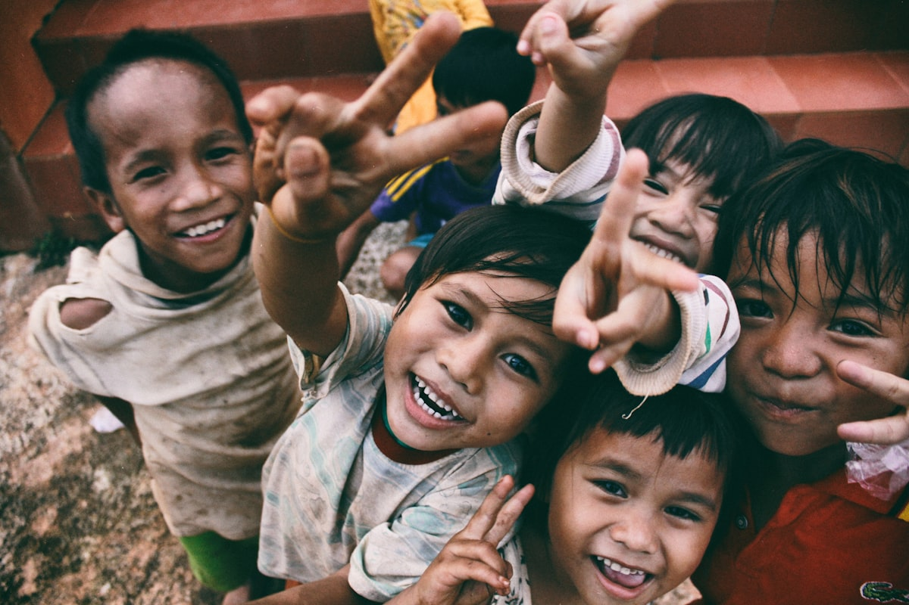

SATURDAY · 8:00 AM
Neighborhood Canopy Day
Plant shade trees and learn practical young-tree care.
Join planting days, tree-care activities and community restoration events.
Different skills and different amounts of time can all support the restoration process.
Help establish new trees during field events.
Support watering, mulching and maintenance.
Document tree health and project progress.
Help organize local environmental activities.
No prior gardening or forestry experience needed. We provide all tools, guidance, and refreshments for a rewarding day outdoors.
Gather at 8:00 AM for coffee, safety orientation, and planting demonstration by certified arborists.
30 MinutesReceive high-quality work gloves, shovels, mulch buckets, and native saplings tailored for your group.
Tools ProvidedDig soil beds, position sapling root balls, water thoroughly, and add protective mulch rings together.
2.5 HoursEnjoy a group lunch, take team photos, and log your hours into the Volunteer Portal dashboard.
Lunch & Log
Plant shade trees and learn practical young-tree care.

Help care for recently established trees and native habitat.
Create a supporter profile to record volunteer hours, follow projects and track your personal impact.
Create Volunteer Account